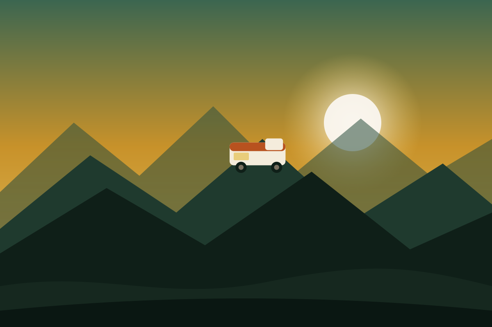
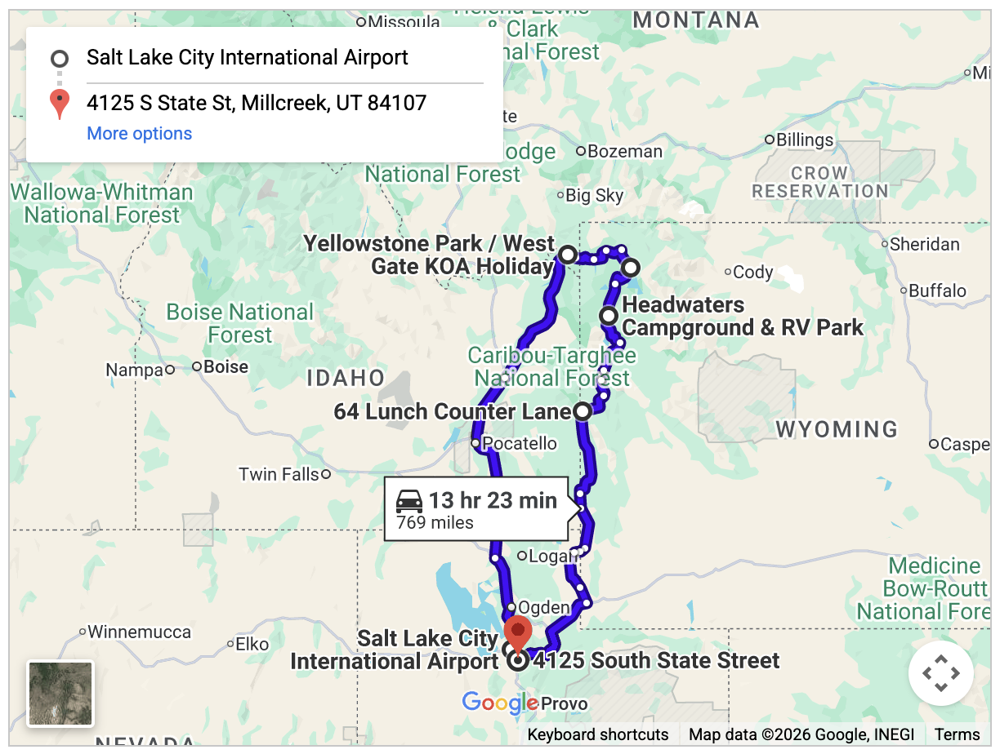

Outbound · Sat, Aug 15, 2026
SFO → SLC
DL1331
5:50 AM → 8:40 AM
Airbus A321 · Nonstop · 1h 50m
Confirmation:
••••••

A 5-Day Great American Camper Adventure
Salt Lake City loop through Alpine, Grand Teton, Yellowstone, West Yellowstone, and back to Salt Lake City.
Utah → Wyoming → Yellowstone → Montana border → back to Utah. The screenshot below is bundled with the app so the master map is always available, even with no signal.

The point-to-point figures come straight off the master map above. The ~843-mile planned total also folds in the driving done inside the parks between stops each day — that's the number that matters against the RV's 1,300-mile allowance.
Map buttons need a connection. On iPhone and Mac they open Apple Maps; everywhere else they open Google Maps in a new tab — no API key required.
Ultra Compact RV · 2 passengers
Tap a day to expand it. Each day remembers whether you've reviewed it.
Saved automatically on this device.
Confirmation numbers are hidden by default. Tap Reveal to view them for this session.
These open live pages and need a connection.